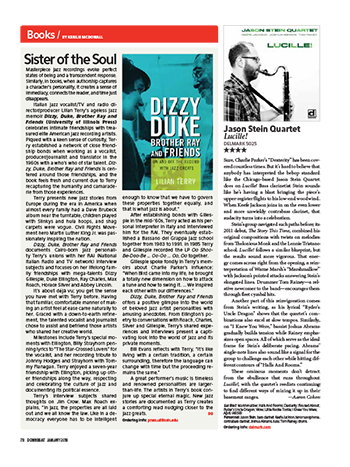

DownBeat Magazine
Masterpiece jazz recordings evoke perfect states of being and a transcendent response. Similarly, in books, when authorship captures a character’s personality, it creates a sense of immediacy, connects the reader, and time just disappears.
Italian jazz vocalist/TV and radio director/producer Lilian Terry’s ageless jazz memoir Dizzy, Duke, Brother Ray and Friends (University of Illinois Press) celebrates intimate friendships with treasured elite American jazz recording artists. Piqued with a keen sense of curiosity, Terry established a network of close friendship bonds when working as a vocalist, producer/journalist and translator in the 1960s with a who’s who of star talent. Dizzy, Duke, Brother Ray and Friends is centered around those friendships, and the book feels fresh and current due to Terry recapturing the humanity and camaraderie from those experiences.
Terry presents new jazz stories from Europe during the era in America when almost every family had a Dave Brubeck album near the turntable, children played with Slinkys and hula hoops, and shag carpets were vogue. Civil Rights Movement hero Martin Luther King Jr. was passionately inspiring the nation.
Dizzy, Duke, Brother Ray and Friends documents Cairo-born jazz personality Terry’s unions with her RAI (National Italian Radio and TV network) interview subjects and focuses on her lifelong family friendships with mega-talents Dizzy Gillespie, Duke Ellington, Ray Charles, Max Roach, Horace Silver and Abbey Lincoln.
It’s about déjà vu; you get the sense you have met with Terry before. Having that familiar, comfortable manner of making an artist feel at ease came naturally to her. Graced with a down-to-earth refinement, the talented vocalist and journalist chose to assist and befriend those artists who shared her creative world.
Milestones include Terry’s special moments with Ellington, Billy Strayhorn penning lyrics to “The Star-Crossed Lovers” for the vocalist, and her recording tribute to Johnny Hodges and Strayhorn with Tommy Flanagan. Terry enjoyed a seven-year friendship with Ellington, picking up other friendships along the way, respecting and celebrating the culture of jazz and documenting its political essence.
Terry’s interview subjects shared thoughts on Jim Crow. Max Roach explains, “In jazz, the properties are all laid out and we all know the law. Like in a democracy everyone has to be intelligent enough to know that we have to govern these properties together equally, and that is what jazz is about.”
After establishing bonds with Gillespie in the mid-’60s, Terry acted as his personal interpreter in Italy and interviewed him for the RAI. They eventually established a Bassano del Grappa jazz school together from 1983 to 1991. In 1985 Terry and Gillespie recorded the LP Oo ShooBe-Doo-Be ... Oo-Oo ... Oo, Oo together.
Gillespie spoke fondly in Terry’s memoirs about Charlie Parker’s influence: “When Bird came into my life, he brought a totally new dimension on how to attack a tune and how to swing it. ... We inspired each other with our differences.”
Dizzy, Duke, Brother Ray and Friends offers a positive glimpse into the world of beloved jazz artist personalities with amusing anecdotes. From Ellington’s poetry to conversations with Roach, Charles, Silver and Gillespie, Terry’s shared experiences and interviews present a captivating look into the world of jazz and its private moments.
Bill Evans reflects with Terry, “It’s like living with a certain tradition, a certain surrounding, therefore the language can change with time but the proceeding remains the same.”
A great performer’s music is timeless and renowned personalities are largerthan-life. The artists in Terry’s book conjure up special eternal magic. New jazz stories are documented as Terry creates a comforting read nudging closer to the jazz greats.
-- Kerilie McDowall
Link to pdf fileAssociation for Recorded Sound Collections Journal
As a twentieth-century art form that grew up alongside the development of recording technology, jazz has spent much of its evolution with its primary sources preserved and available. Entering its second century, however, while the musical recordings remain, the accompanying stories are disappearing with each successive obituary. The last of those individuals who remember experiencing the music and musicians in the 1920s are gone, and we have all too few accounts from them. Only a few decades from now, students of jazz wishing to learn about the 1950s and 1960s will have only what has been recorded and preserved. There will be no opportunity for new original interviews and oral histories.
Rarer still is information about the important aspects of personality and character that can be supplied only by close friends. Even among the artifacts that do survive, it is uncommon to find much insight into the personal lives of musicians. Many published interviews focus exclusively on the professional career (and many journalists only consider the latest release and the current band). Biographers can therefore find it difficult to present a picture of a musician – even a prolific one – that is well-rounded and complete, giving a sense of what a performer did in the time spent off the bandstand and outside of the recording studio and what was important to him. We can be most thankful for resources that do help with this task, such as this book.
Lilian Terry’s background is quite out-of-the-ordinary. Born in Egypt in 1930 to Maltese and Italian parents, she undertook academic studies in Cairo and Florence. Her family loved music and Terry studied classical piano until age 17, developing an interest in jazz in her early teens. She participated in a variety of ways with jazz in Europe, beginning in the 1950s. As a singer, she was an active performer and recording artist. She also wrote lyrics for Italian films. In 1967, Terry represented Italy at the founding of the European Jazz Federation, and she served as vice president of its Division of Education. At the same time, she produced radio and television shows for Italy’s RAI network, and this activity led to some of her encounters with major figures of American jazz. Seven of these interactions (most of which spanned decades) are the subject of Dizzy, Duke, Brother Ray, and Friends.
Duke Ellington, whom Terry first met in 1966 at the Antibes Jazz Festival, always had a suave and sophisticated public persona, particularly around women. The account that Terry relates is very much in line with the anecdotal evidence that has been related from various sources. Ellington was a special favorite of hers, and this must have been an occasion that made an indelible impression. Terry has an excellent recall for detail (noting the color of Ellington’s bathrobe – blue, his favorite) and while the backstage dialogue may not be verbatim, it is certainly believable. Terry also has some supporting evidence. The July 26 performance, including Ellington’s spoken introduction that references her, is now available on Verve’s Côte d’Azur Concerts eight-CD set. Her request for “The Star-Crossed Lovers” (which was not in the band’s current repertoire) must have had an impact on Ellington as the CD set reveals he included the piece no fewer than four times over the course of that week. As a sidebar to her Ellington recollections, Terry provides an amusing account of how she ended up recording an album with pianist Tommy Flanagan, including a lyric version of “The Star-Crossed Lovers” in 1982.
"The anecdotes are not generic rehashes that have been told before elsewhere, but instead have a freshness and singularity that makes one think of a great improvisation."
-- Michael Fitzgerald
Following the concert, Ellington invited Terry to join the band for a reception and she spent time with him on several occasions later that week. The following year in Italy, they met again, on which occasion the great conductor Herbert von Karajan made an appearance to congratulate Ellington. A 1968 interview from the Newport Jazz Festival is less personal, surely because it was taped for radio. It is nonetheless a valuable document. The chapter ends with an account of a 1969 television program that Terry did not allow to be broadcast because the producers wished to portray Ellington in a dishonest “rags-to-riches” narrative. Perhaps presciently, Ellington had required that Terry be granted the legal right of approval in the contract he signed.
Compared to so much written about Ellington and his public persona, this book gives the sense that Ellington’s treatment of Terry was very typical of how he interacted with women. The relationships with singer Abbey Lincoln and drummer Max Roach (both together and separately) that she describes feel more authentic and personal. The Lincoln portions of the chapter radiate the warmth of close friendship, and contain less about the music and more about the woman. The Roach portions combine informal escapades (such as visiting with Lucky Luciano’s brother in Newport, Rhode Island) and more professional encounters. Roach talks race and politics in a substantial radio interview from the 1970s during the time when he was teaching at the University of Massachusetts, but much of this content has appeared in other sources. Terry was able to maintain good relations with both Lincoln and Roach after their marriage ended. This allows for a fuller picture, and it is revealing that, “while at every meeting Abbey would sooner or later mention ‘Roach,’ as she called Max, since their divorce Max had never once mentioned her name.” (p.54) One quibble: the description of Lincoln’s hairstyle as “her deliberate Angela Davis afro” (p.42) seems to miss the important point that it was Lincoln who was ahead of the curve, appearing at fashion shows in 1962 and 1963 and attracting attention with her natural hair, years before Angela Davis.
The chapter on Horace Silver begins with a long prelude to a 1968 interview. Silver is friendly, but not especially forthcoming, and his answers are brief and to the point. There is a good deal of discussion about the mingling of jazz and rock, which was very much a hot topic at the time. A second interview from 1987 is more expansive, with Silver touching on the founding of the Jazz Messengers group with Art Blakey in the 1950s and his move from Blue Note Records to his own Silveto label in the 1980s. He also discusses his spiritual beliefs, which played a role in his transition from labels. This later conversation is much less rigid than the earlier one.
Terry states that she and Ray Charles had “‘an affectionate friendship,’ meaning not a real love affair but a close, loving relationship,” (p.83) that they kept secret for more than ten years. They first met at the Newport Jazz Festival in 1968 and the resulting interview is presented in a paraphrased summary with occasional direct quotes. An interview from the following year is very brief and inconsequential, and another one from later in 1969 is essentially a series of short introductions to musical selections that were to be played on Terry’s radio show. A 1970 encounter is tantalizingly short, with Charles talking a little about his repertoire, singers who influenced him, and about his position straddling the pop and jazz styles. According to Terry, other radio interviews from the 1970s have been lost, but Charles’s 1978 and 1979 visits to Rome are represented in lengthier portions, with extended discussions of musical purity as well as racial issues and politics in the United States and elsewhere.
The chapter on Bill Evans is the least substantial of the sections, as Terry really had only one interaction with the pianist. In the mid-1970s, she interviewed him at his hotel in Bologna for her radio program. The interview is by no means as personal as some of the others, but it is informal and revealing. Evans states that his best moments “are when I play the piano in total solitude, without the public; for I confess that I am not a ‘concert’ pianist. When alone, I can communicate completely with my music.” (p.100) In spite of the brevity of this section, it is a worthy addition to the existing body of documentation on Evans.
Approximately half of the book is devoted to Dizzy Gillespie, whom Terry first met in 1966. Their relationship was wide-ranging and continued until the trumpeter’s death in 1993. Terry was commissioned to translate Gillespie’s autobiography To Be or Not...To Bop into Italian, and Gillespie even recorded with Terry in 1985. Like Ellington, Gillespie presented a façade to the public, and the first few meetings saw him treat Terry with a comic flirtatiousness. In the early 1970s, however, that attitude “gave way to a relaxed familiarity. It was as if we had always known each other, feeling at ease like old friends.” (p.114)
The story of Terry’s work on the Italian translation of Gillespie’s autobiography is quite unusual: to start with, the Italian publisher required it be shortened by forty percent, and the vernacular English was not easy to convert into an Italian that was agreeable to the higher-ups. Terry’s efforts were finally deemed acceptable and she was paid, but shortly thereafter, due to new ownership, the book’s publication was entirely canceled and her work was destroyed. Fortunately, additional interviews that she conducted regarding Gillespie’s visits to Italy do survive and are presented here. One very interesting aspect is the account of the Dizzy Gillespie Popular School of Music, which Terry co-founded in Bassano in 1983. It closed in 1996, three years after Gillespie’s passing.
Of all the subjects in this book, it is Gillespie who is portrayed most completely. The coverage includes discussion of his composing, the musical innovations of bebop, and his relationship with Charlie Parker. He talks about religion, his family, even his diabetes. The reader is treated to not just an hour or an afternoon spent in the company of the artist, but multiple days in great detail. The anecdotes are not generic rehashes that have been told before elsewhere, but instead have a freshness and singularity that makes one think of a great improvisation. Because of the length and depth of their close friendship, Terry is comfortable enough to present her own assessment of Gillespie, which is very insightful.
Throughout the book, Terry’s intelligence, compassion, curiosity, and tact shine through. She is consistently respectful (sometimes even flattering), but also bold. There are a number of times when meeker interviewers would have failed some of the “tests” that the artists, perhaps wary of an outsider, set for her. Especially in her interactions with Dizzy Gillespie, she is able to engage and challenge as an equal, as opposed to being a submissive interviewer. While Terry is a Catholic, her knowledge of religions allowed her to provide comprehensive answers to Gillespie’s inquiries about Islam. In turn, she took up his challenge to learn about the Baha’i faith, passing the detailed quiz he later administered with flying colors.
The book’s lack of an index is an inconvenience, but not a great loss as the book is short and the sections are fairly discrete. Eleven pages of black-and-white photographs, mostly of Terry with each of the musicians, are included, though Silver, Charles, and Evans are not represented.
While the book reveals a good deal about its fascinating author, this is not a biography of Terry. Neither is it a history of American jazz musicians in Europe from the 1960s to today. The individual sections have almost nothing in common, with the exception of Terry herself, and there is no real attempt to link the stories together in a cohesive manner to make any grander point. Regardless, this book contains a great deal of fascinating information, much of which has never been available elsewhere. Researchers of the seven subjects will find it very useful as yet another source that can be consulted and integrated into more focused projects. When the stories told are indeed each one-of-a-kind, they are priceless.
-- Michael Fitzgerald
Link to pdf fileThe New York City Jazz Record
A radio host, concert organizer and accomplished vocalist, Lilian Terry played an important role on the Italian jazz scene for many years. Now in her 80s, she has written a jaunty memoir about the time she spent with some of the 20th century’s legendary musicians.
Dizzy, Duke, Brother Ray and Friends is a book of laudable, if modest, ambitions. Terry isn’t out to dish dirt and doesn’t spend much time writing about the music itself. But taken for what it is — a collection of mostly flattering character sketches — this is a likeable effort.
Raised in Cairo and Florence, Terry began working for the Italian broadcaster RAI in the ‘60s. In the years that followed, she interviewed and befriended a host of visiting American jazz stars. Her fond memories of these artists fuel the book’s most vivid chapters. In Terry’s telling, Duke Ellington was a font of wry quotes—“I tour the world with a small case full of vitamins,” he told her—and Max Roach was a resourceful host when she visited the U.S. In the late ‘60s, Terry was traveling with Roach and his fellow AfricanAmerican bandmates when they were turned away by a racist Rhode Island innkeeper. The quickthinking drummer responded by arranging alternative accommodations for the group: “It was only the next afternoon…that Max told me, greatly amused, that we had been the guests of Lucky Luciano’s brother-in-law.”
After Terry, the book’s central character is probably Dizzy Gillespie. Friends for more than a quarter-century, Terry and the trumpeter collaborated on music education programs and an album released by an Italian label (Oo-Shoo-Be-DooBe ...Oo, Oo ...Oo, Oo, Soul Note, 1985). Gillespie, she says, was a brilliant, complex person. He could be moody, Terry says, and as he approached his 60th birthday, Gillespie rebelled against the idea of wearing a hearing aid. Though “not a ‘Santa Claus’ kind of man,” Terry writes, Gillespie’s “love of life and devotion to his music had raised him well above his shortcomings.”
-- Kevin Canfield
Link to pdf fileMusica Jazz
Read the review in Italian (pdf file)Le Jazzophone
Read the review online (page 7)JazzWise
Read the review (pdf file)LE JAZZ A SA TRIBUNE
Read the online review in FrenchJazzdaGama
Read the online reviewArtsJournal: Rifftides blog
Read the blog postOn the Seawall
Read the blog post